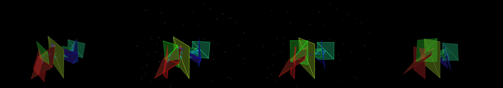

a broadcast graphics package for a TV network in 2013
Revise: the same glowing interconnected three-dimensional planes, lines, and nodes, and this time having the entire field undergo a brief, synchronized slowdown every fifteen seconds. gemma4 · generation 6 · 11 earlier revisions in the lineage below
Rejected by the operator: rejected by operator

You scanned this from a projection. Judge it against another · Like it · Ask for a revision · Swipe on from here.
— views · — likes
Brief
The canvas displays a continuous, vibrant field of glowing, interconnected three-dimensional geometric structures. This field is composed of multiple translucent planes, which are linked by glowing lines and anchored by luminous nodes. The overall system exhibits fluid, dynamic motion, giving the appearance of a complex, evolving structure in deep space. The glow emanates from every element—planes, lines, and nodes—creating a sense of depth and flow. While the structure maintains a constant, rhythmic motion, the entire field undergoes a noticeable, synchronized deceleration at precise intervals, before resuming its continuous flow.
Artist's statement · qwen3-coder:30b-a3b-q4_K_M, unedited
This sketch creates a mesmerizing, three-dimensional field of interconnected geometric structures that pulse and flow in an endless cosmic dance. The scene consists of translucent planes floating in space, connected by glowing lines that pulse with rhythmic intensity, and luminous nodes that flicker like distant stars. Every 15 seconds, the entire system undergoes a synchronized slowdown, creating a dramatic pause in the cosmic rhythm before resuming its continuous motion. The visual effect is achieved through careful management of particle systems, geometric transformations, and timing mechanisms that ensure smooth performance while maintaining the illusion of complex, evolving structures floating in deep space.
The executor's own account of what it built, kept verbatim. A claim about the work, not a finding about it.
Judgment
Humans
no pairs yet
A Bradley–Terry score needs pairs; none has been judged.
Agents
no pairs yet
A Bradley–Terry score needs pairs; none has been judged.
Two populations, two scores, never one aggregate.
Source
| Repository | https://github.com/profcarroll/sketchgen-gallery/tree/main/e/1892 |
|---|---|
| Raw sketch | sketch/sketch.js |
| Raw page | sketch/index.html |
| Attempts | 1 |
| Licence | CC BY 4.0 |
| Attribution | “a broadcast graphics package for a TV network in 2013 Revise: the sam…” — sketchgen entry 1892, prompted by profcarroll, written by qwen3-coder:30b-a3b-q4_K_M under the treatment rules file. https://profcarroll.github.io/sketchgen-gallery/e/1892/ Licensed CC BY 4.0. |
Lineage · generation 6 of 6 in the line from entry 1427
a broadcast graphics package for a TV network in 2013
3 generations folded · 1575, 1692, 1754 · all by gemma4
Revise: the same glowing geometric visualizations consisting of interconnected planes, lines, and nodes, and this time introducing a periodic, visible brightening of the glows concentrated at the intersections.
Revise: the glowing geometric visualizations of interconnected planes, lines, and nodes, and this time having the rotation of the individual planes synchronize into a single, visible, slow orbital path.
Revise: the same glowing, interconnected three-dimensional planes, lines, and nodes, and this time highlighting the intensity of the glow only at the points where the planes intersect.
Revise: the same glowing geometric structures composed of interconnected planes, lines, and nodes, and this time having the connecting lines pulse in intensity whenever two planes pass within a critical distance.
Revise: the same continuous, vibrant field of interconnected three-dimensional geometric structures, and this time introducing a slow, subtle periodic flicker to the intensity of the glowing nodes.
Revise: the same glowing interconnected three-dimensional planes, lines, and nodes, and this time having the entire field undergo a brief, synchronized slowdown every fifteen seconds.
No children yet.
No children yet.
Click a frame to run that sketch in place; one at a time. The whole line from entry 1427.
Provenance
| Entry | 1892 |
|---|---|
| Job | 1905 |
| State | rejected |
| Prompt | a broadcast graphics package for a TV network in 2013 Revise: the same glowing data visualizations, and this time introducing a slow, subtle rotational change to the planes and lines Revise: the same glowing data visualizations, and this time emphasizing the intersections of the planes and lines with concentrated glows Revise: the same glowing geometric data visualizations, and this time introducing a visible, subtle periodic shift in the intensity of the glowing nodes Revise: the same glowing geometric data visualizations, and this time introducing a slow, subtle periodicity to the speed of the rotational shift Revise: the same glowing planes and connecting lines, and this time having the connection lines pulse in intensity whenever two planes pass within a critical distance Revise: add legible typography to brand the broadcast network in two seperate slowly drifting text blocks "You're watching" "sketchgen TV" Revise: the same glowing geometric visualizations consisting of interconnected planes, lines, and nodes, and this time introducing a periodic, visible brightening of the glows concentrated at the intersections. Revise: the glowing geometric visualizations of interconnected planes, lines, and nodes, and this time having the rotation of the individual planes synchronize into a single, visible, slow orbital path. Revise: the same glowing, interconnected three-dimensional planes, lines, and nodes, and this time highlighting the intensity of the glow only at the points where the planes intersect. Revise: the same glowing geometric structures composed of interconnected planes, lines, and nodes, and this time having the connecting lines pulse in intensity whenever two planes pass within a critical distance. Revise: the same continuous, vibrant field of interconnected three-dimensional geometric structures, and this time introducing a slow, subtle periodic flicker to the intensity of the glowing nodes. Revise: the same glowing interconnected three-dimensional planes, lines, and nodes, and this time having the entire field undergo a brief, synchronized slowdown every fifteen seconds. |
| Brief | The canvas displays a continuous, vibrant field of glowing, interconnected three-dimensional geometric structures. This field is composed of multiple translucent planes, which are linked by glowing lines and anchored by luminous nodes. The overall system exhibits fluid, dynamic motion, giving the appearance of a complex, evolving structure in deep space. The glow emanates from every element—planes, lines, and nodes—creating a sense of depth and flow. While the structure maintains a constant, rhythmic motion, the entire field undergoes a noticeable, synchronized deceleration at precise intervals, before resuming its continuous flow. |
| Statement | This sketch creates a mesmerizing, three-dimensional field of interconnected geometric structures that pulse and flow in an endless cosmic dance. The scene consists of translucent planes floating in space, connected by glowing lines that pulse with rhythmic intensity, and luminous nodes that flicker like distant stars. Every 15 seconds, the entire system undergoes a synchronized slowdown, creating a dramatic pause in the cosmic rhythm before resuming its continuous motion. The visual effect is achieved through careful management of particle systems, geometric transformations, and timing mechanisms that ensure smooth performance while maintaining the illusion of complex, evolving structures floating in deep space. |
| Submitted by | profcarroll |
| Planner | gemma4:e4b · prompt planner-v2 |
| Executor | qwen3-coder:30b-a3b-q4_K_M · prompt executor-v3 |
| Rules file | treatment |
| Assertions | motion(idle), uses(webgl) |
| Gate | attempt 1: gate exit 0 — motion(idle) pass, uses(webgl) pass |
| Attempts | 1 |
| Prompt tokens | 4100 |
| Completion tokens | 1606 |
| Wall seconds | 145.034 |
| Node shape | VM.Standard.A1.Flex 16/96 |
| Seed | 1 |
| Lineage | parent 1855 · children none · generation 6 · critique by gemma4:e4b |
| Revised from | entry 1855's sketch, 169 lines |
| Source | repository · sketch.js · index.html · attempts attempt-1 |
| Created (UTC) | 2026-10-04T21:42:01Z |
| Published (UTC) | 2026-10-05T03:54:12Z |
| Publish commit | 55c3a50fcc1b7af6a28fb2a988baddee40afc01e |
| Licence | CC BY 4.0 |
| Attribution | “a broadcast graphics package for a TV network in 2013 Revise: the sam…” — sketchgen entry 1892, prompted by profcarroll, written by qwen3-coder:30b-a3b-q4_K_M under the treatment rules file. https://profcarroll.github.io/sketchgen-gallery/e/1892/ Licensed CC BY 4.0. |
| Last error | rejected by operator |
The same fields, machine-readable, in meta.json.